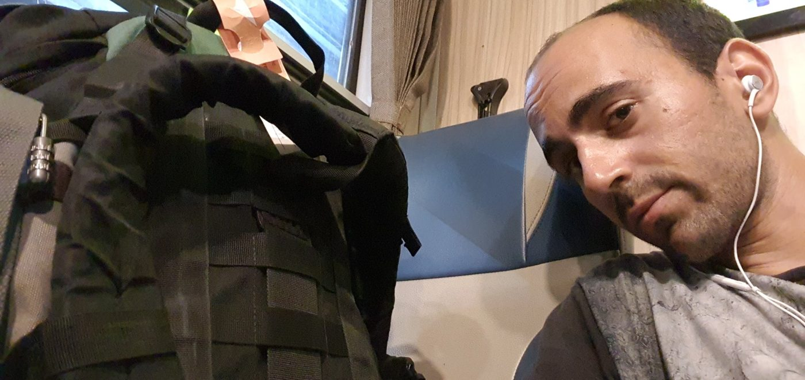
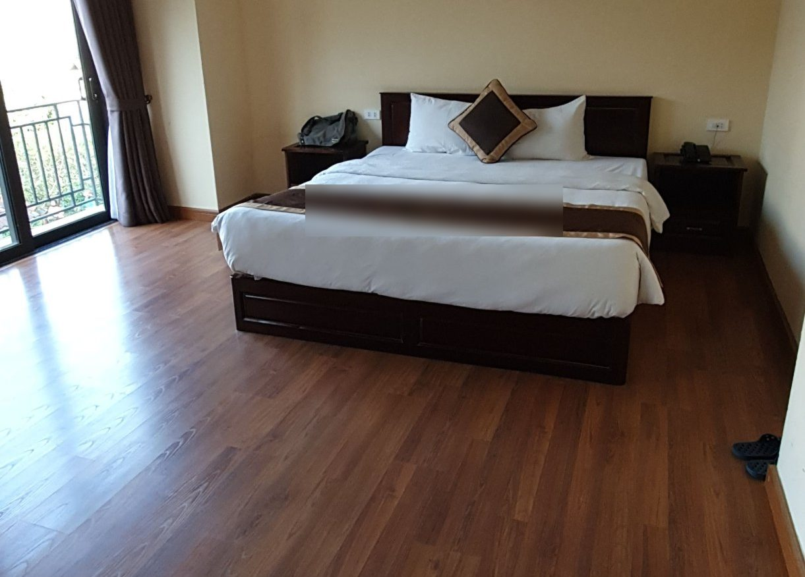
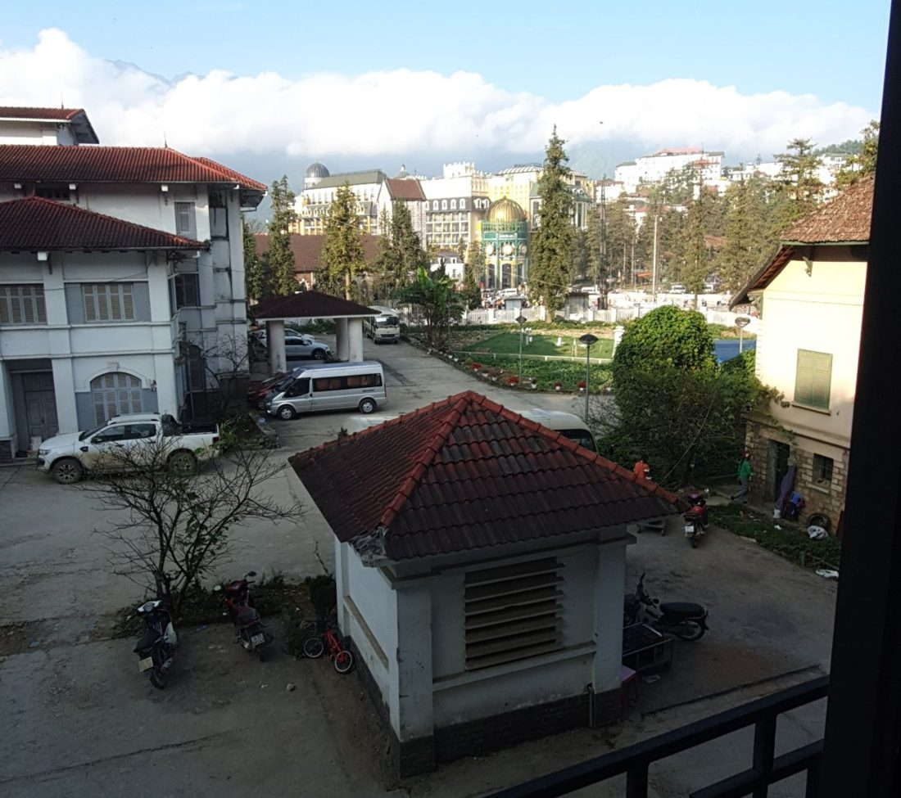
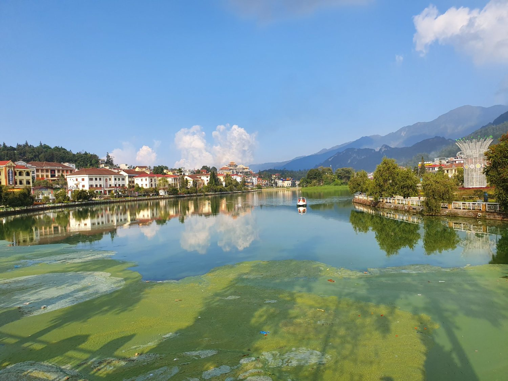
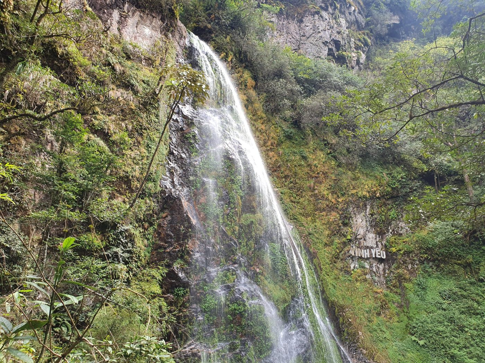
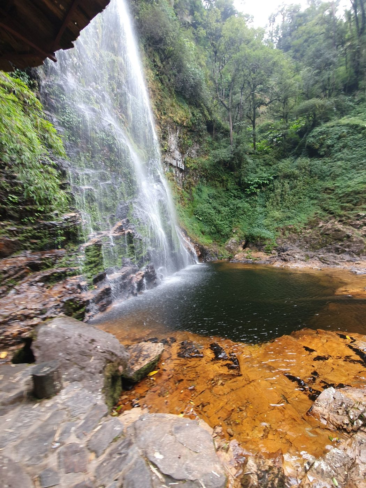
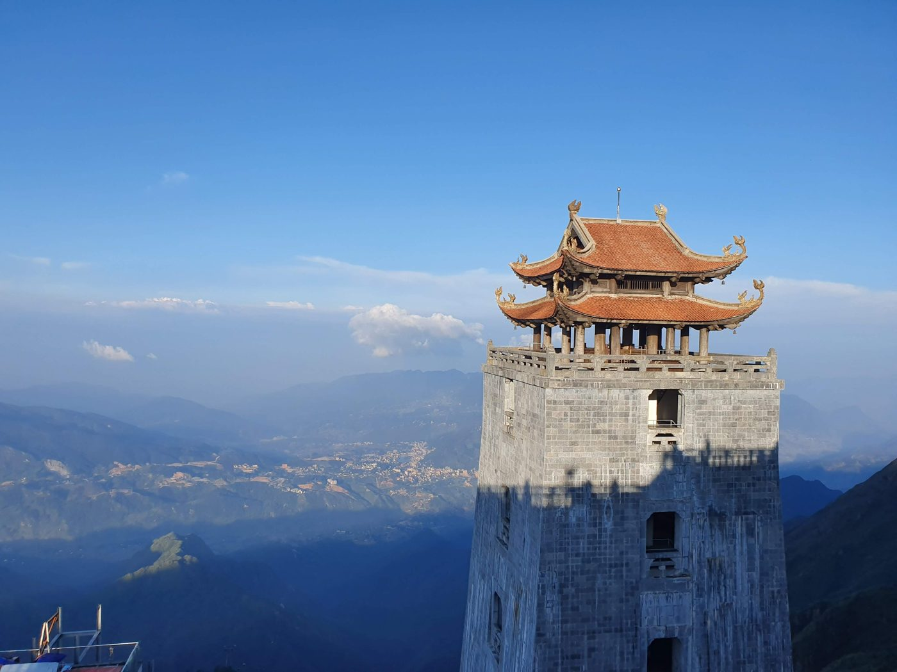
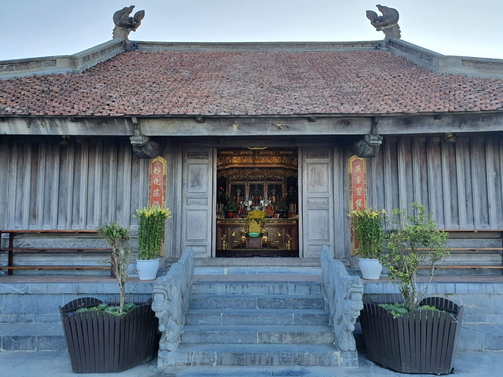

Guide · Southeast Asia · Vietnam · Hanoi and Sapa
Hanoi to Sapa, October 4 to 7, 2019: the night train, a waterfall and Fansipan
In October 2019 I flew from Manila to Hanoi, the capital of Vietnam, spent one day there, and took the overnight train to Sapa, a mountain town in the north. I slept in a hostel near the airport on the first night and in a boutique hotel in Sapa on the second. This page covers October 4 to 7.
In short: a hostel by the airport, a Grab ride into the city, a SIM card, a train ticket booked on my phone that evening, the night train, a shared minibus up the mountain, a day in Sapa, then a waterfall and the Fansipan cable car, with what each of those costs today. I recommend the hotel where I stayed, but I do not give its name. The times are my phone's clock, shown by Google Photos in GMT+07:00. The places are Google Photos' pins, and I say where a pin is an estimate. I leave out the hostel's name, my name and ticket number from the booking, the SIM card's numbers, and every photo with other people in it.
- Airport to the Old Quarter: Noi Bai airport is about 30 km from the Old Quarter, according to Vietnam Airlines. A Grab ride to the Old Quarter is listed at about 200,000 to 300,000 dong with the price shown before you confirm. A metered taxi is listed at 280,000 to 380,000 dong, from Mai Linh or Noi Bai Taxi only. Bus 86 costs 45,000 dong and takes 45 to 60 minutes, depending on traffic.
- A hostel by the airport: there are hostels near the airport, and one on Hostelworld says it is 500 meters from Terminal 2 and has a 24-hour reception. A review there warns that knocking at night after a long flight is jarring. Hostelz says such a hostel suits an early flight, and that otherwise a hostel in the city has more around it.
- A SIM card: every SIM needs your original passport for registration. One site lists a Viettel 30-day tourist SIM with 60 GB at 200,000 dong. Another says airport counters charge 250,000 to 300,000 dong for a 30-day, 30 GB package, which is more than a city store. Vietnamobile lists a tourist SIM called GO10 at 40,000 dong for 10 days.
- The night train to Lao Cai: the station for Sapa is Lao Cai, about 38 km below the town. A timetable site checked on October 21, 2026 lists 3 departures from Hanoi Station, between 21:45 and 22:40, taking 7 hours 35 minutes to 7 hours 50 minutes, with a soft sleeper from 610,000 dong on 12Go. In 2019 I paid 155,000 dong for a soft seat on the SP1, plus fees.
- From Lao Cai to Sapa: about 35 km, 50 minutes to 1 hour by shuttle or taxi, according to a Vietnam guide. A local bus or minivan costs about 1.70 to 8 dollars per person, and a private car 20 to 100 dollars a ride, on another guide. A reviewer on Klook paid a 55,000 dong shared shuttle.
- A night in Sapa: on Booking, boutique-style hotels in the town are listed from about 45 to 105 dollars a night for two, and plain hotels from about 25 to 30 dollars. Prices move with the season. The Stone Church is free and open 06:00 to 20:30, and Cat Cat village costs 150,000 dong, on one guide.
- The Love Waterfall: about 14 km from Sapa. The entrance is 70,000 dong for adults and 30,000 for children, cash at the gate, open 09:00 to 17:00, and the paved path is about 1.5 km, 20 to 30 minutes each way. A taxi or scooter from the town is listed at 125,000 to 250,000 dong one way.
- The Fansipan cable car: from 1 January 2026 the round trip is listed at 850,000 dong for an adult and 550,000 for a child of 1 to 1.4 meters, and the Muong Hoa train from the town is 200,000 dong round trip. Check the hours, because some listings show the last ride up in the early afternoon.
The sources are in the box at the end. These prices change, so check before you go.
October 4 and 5: the airport and the city
I flew from Manila to Hanoi on a low-cost airline. I do not remember which one, or the time of the flight, when we landed, or what it cost. I slept at a hostel near the airport, and I do not give its name. In the afternoon of October 5 I took a Grab to the city. I do not remember the fare or how long it took.
My first photos from Hanoi are from 16:53. They show a refrigerated display case with a whole raw salmon and fillets laid out on ice, with limes, oranges, a pineapple and a bowl of mussels around them. I do not remember where it was or whether I ate there.

At 17:27 I photographed a Vietmobile SIM card in my hand, in a shop, with the card still in its holder. So I bought a SIM that afternoon. I do not remember where, or the price, or the data package, and I do not show the card, because it prints the number and the card's serial number.
At 18:32 I photographed a map of Vietnam painted on the wall of a hostel in the city, with pins on Sapa, Ha Giang, Ba Be, Ha Long, Mai Chau, Pu Luong, Ninh Binh, Phong Nha, Hue, Da Nang, Hoi An, Nha Trang, Dalat, Mui Ne and Saigon. Next to it hung a board of the tours the hostel sold: Ha Long Bay for two or three days, Cat Ba, Sapa with trekking, Ninh Binh and Mai Chau, and a home stay. The board lists no prices. I do not say which hostel it was, and I do not remember why I was there.

The train ticket
At 19:10 I took a screenshot of my booking on the Baolau site: Hanoi to Sapa on Saturday, October 5, 2019, train SP1, departing at 21:35, one soft seat. The seat was 155,000 dong, the service fee 40,000 and the processing fee 13,000, which made 208,000 dong in all. I booked about two and a half hours before the train left, and it was not sold out. I leave out my name and ticket number.
How I got to the station: I took a Grab again. I do not remember the fare, or which gate I used. The train SP1 left Hanoi at 21:35, according to my booking, and the timetable I found says it reaches Lao Cai at about 05:30 the next morning.
The night train
At 21:44, nine minutes after the booked departure, I filmed a short video through the window. It shows a bridge over a wide river at night, with the lights of the city reflected in the water. I think it is the Long Bien Bridge over the Red River, but I have not confirmed it, and I did not check the pin. Trains still cross it, with a railway in the middle and lanes for motorbikes and bicycles on both sides, according to Vietnam Airlines' guide. VnExpress says trains cross it at no more than 15 km/h, and a timetable site lists Gia Lam, on the far bank, as a stop of the Lao Cai trains. I do not show the video.
At 21:45 I took a blurred photo through the same window, of a lit stretch of riverbank with a market, red and blue neon, and the reflections of the carriage. I took a few more photos inside the carriage: the seats in blue and green imitation leather, luggage racks along both walls with bags piled on them, curtains at the windows, and a lit aisle. Some show other passengers, so I do not show them. I leave in only a selfie of me in my seat, with my backpack and its combination lock beside me.

From that night I have two more items in Google Photos, at 23:23 and 23:29, that I did not use here. That is all I have from the night on the train.
October 6: Lao Cai and Sapa
The train reached Lao Cai in the early morning, around 05:30 by the timetable I found. From the station I took a shared minibus up to Sapa. I do not remember the price, the company, how long it took or where it left me. At 06:52 I filmed a 28-second walk through the town center, in the early light, with pine trees, notice boards, parked minibuses and a yellow bus. Google Photos places it near the Stone Church, as an estimate, and I think it was soon after I arrived. I do not show it, because a woman in traditional dress walks through the frame.
I slept at a boutique hotel in the center, and I recommend it. I do not give its name, and I do not remember what I paid. The room had a double bed, a wooden floor and a balcony. I photographed the view from the balcony, over a car park with minibuses and motorbikes, white colonial-style buildings with red roofs, a building with a golden dome in the middle of the town, and cloud sitting low on the mountains. I also photographed a small mini-fridge in the room, and I show no picture of it.


At 15:18 I filmed a two-minute-and-25-second tour of the hotel, with its lobby, a staircase, the room, the bathroom and a water heater. At 15:51 I photographed Sapa Lake in sun, with a pedal boat, white houses with red roofs and mountains behind, and green algae spread over the water in front of me. At 17:26 I photographed the central square in the evening, where a few teenagers were playing football, and filmed a slow turn around it. There is a stone church at the edge of the square, with large steps like an amphitheater in front of it. The guides say the Stone Church was built in 1895 and is free to enter, and that Ham Rong mountain starts right behind it. I do not remember going in.

I ate twice that day, as far as the photos show. A coconut served whole with a straw on a wooden table, in a restaurant with a framed painting on the wall, and spaghetti bolognese with a sprig of mint on a white plate, in an open-air restaurant. I do not know where either was or what time, and I do not remember the prices. At 20:36 I photographed the lit center of town from the hotel, and at 22:13 the lake at night, with a glowing structure in the middle of the shore and people walking on the promenade. At 23:54 I took a selfie in front of a coffee shop's glass door, and Google Photos pins it at Sa Pa Lake as an estimate. In the evening I also watched a film on a hotel television, with Vietnamese subtitles. I do not show it.

October 7: the Love Waterfall and Fansipan
On October 7 I did two things outside the town: a waterfall in the late morning and the Fansipan cable car in the afternoon. I do not remember how I got to either of them, and I do not remember what I paid at either. The times are my phone's clock, shown by Google Photos in GMT+07:00.
At 08:46 I photographed breakfast on a wooden table: an omelette with tomato and cucumber, half a baguette, a pot of Lipton tea and a few bottles of sauce. I do not know where it was or what it cost. At 11:37 I photographed the town from a window, and I do not show it, because it shows the signs of shops and a hotel.
The Love Waterfall
At 12:01 I filmed a short video of a road in the hills, with roadworks, from something that was moving. I do not remember what I was riding in. The waterfall is the Love Waterfall (Thác Tình Yêu): a sign on the rock beside it reads TÌNH YÊU, and Google Photos pins my photos at Suối Vàng and Thác Tình Yêu, as an estimate. At 12:45 I photographed the stone path that leads to it, and I do not show it, because a man walks on it. At 12:54 I photographed the fall with the sign, and at 13:25 I filmed the pool, with other people in the frame, so I do not show it.

At 13:39 I photographed the pool and the fall with no one in it. I went into the water, and it was very cold, almost freezing. My last photos there are from 14:22 and 14:26, of the fall with a climber near the top, and of a river with people walking along it. So my photos at the waterfall run from 12:45 to 14:26.

Fansipan, by cable car
At 15:58 I filmed a car park at the lower station of Sun World Fansipan Legend, and at 16:01 I photographed the square next to it, with a tall cone covered in black-and-white patterns and ribbons. I do not show the photo, because a man walks through it, and I do not show the video. At 16:07 I photographed a tank with sturgeon, and at 16:19 a temple complex at the foot of the mountain. I do not remember what the complex is called.
By my photos I rode the cable car up between about 16:25 and 16:40. I took a selfie in the cabin at 16:25, and others of the cables, of a red cabin passing on the other line, and of the town of Sapa lying in the valley in the late sun. At 16:30 I took a selfie with another person in the cabin, and I do not show it. The glass is scratched and hazy in places, so the first photos are soft. At 16:48 I filmed 23 seconds at the top, and Google Photos pins my photos from 16:50 beside the summit of Fansipan, as an estimate.


At the top I photographed a terrace with a glass railing above a sea of cloud (16:50), a stone tower with a two-tier pagoda roof, with Sapa far below (16:52), a wooden hall with carved stone beasts on its steps and an altar inside (16:52), and a stone gate at the top of a wide flight of steps, with a name on its beam that I read as THANH VÂN ĐẮC LỘ. At 16:59 I photographed a huge bronze seated Buddha from its base, so I climbed the steps up to it. At 17:00 and 17:02 I filmed a walk around its terrace and down to the base, where a red carpet leads to an entrance covered in yellow flowers, with a guard in white at the door. I do not show those videos.



At 17:07 and 17:08 I photographed a hall with a glass pagoda, an altar with a golden Buddha, fruit and yellow flowers, all behind glass. I think it is inside the base of the statue, because I filmed the entrance five minutes earlier, but I did not check. I was at the top from at least 16:48 to 17:16, which is when I took the last photos I have there: the sun behind a cloud over the ridges, and a selfie at the stone gate, which I do not show because two men walk beside me.

I do not remember how I came down, or how long it took. One hazy photo from a cabin, with no time on it, shows terraces below, and it is probably from the way down. At 17:47 I was back at the sign of Sun World Fansipan Legend at the bottom, where Google Photos pins the photo, and at 17:52 I photographed a cone covered in black-and-white patterns, with pink paper umbrellas and ribbons. I do not remember how I got back to the town that evening.

What it costs today. Several ticket sites list the standard round-trip cable car from 1 January 2026 at 850,000 dong for an adult and 550,000 for a child between 1 and 1.4 meters, with children under 1 meter free. One of them says it is based on official Sun World pricing. A funicular up the last stretch is listed separately, and the Muong Hoa train from the town to the lower station is listed at 200,000 dong round trip. I did not check Sun World's own price page. Check the hours too: some listings show the last ride up in the early afternoon, and in 2019 I rode up at 16:25. I did not note whether I think it was worth it, so I give no verdict.
The waterfall today. It is about 14 km from Sapa. The entrance is 70,000 dong for adults and 30,000 for children, paid in cash at the gate, and it is open from 09:00 to 17:00. The path is paved and about 1.5 km long, 20 to 30 minutes each way. You can park near the entrance, and none of the sources I found gives a parking fee. A guide lists a taxi or scooter from the town at 125,000 to 250,000 dong one way. I do not remember paying for either the entrance or parking.
What I recommend, and what I would skip
I recommend Sapa as a beautiful place, and I recommend doing what it offers on your own, not through an organized tour. I stayed in the town and walked around it, to the lake, the square and the viewpoints, and I liked that. What I would skip are the tourist attractions, because in the end they are attractions for tourists, and they are not for everyone. It depends who you ask. I like road trips more, and that is the lens I used. I do not remember the price of anything I did there, so the prices in this page are today's, from the sources below.
What I would do differently
I would write down the name of the hostel and what the Grab rides, the minibus and the hotel cost, because I have none of them. I would book the night train a day earlier in the busy season, because I booked mine two and a half hours before and I do not know what else was left. And for a late-night arrival I would keep a hostel by the airport, as I did, and I would message the hostel before I landed, because the reviews warn that knocking on the door at night is hard.
- Airport to the Old Quarter: Vietnam Airlines gives the 30 km distance. Pholio's guide, verified April 2026 lists Bus 86 at 45,000 dong, Grab at 200,000 to 280,000 and metered taxis at 280,000 to 380,000. Jackfruit Adventure lists Grab at 200,000 to 300,000 dong and Bus 86 at 45 to 60 minutes.
- Hostels by the airport: Hostelworld, MOTOGO and its Danish page list the 24-hour reception and the 500 meters from Terminal 2. Hostelz says it suits an early flight.
- SIM cards: Saily lists the Viettel tourist plan. Vietnamtourism, Wi-Fi and SIM cards in Vietnam lists the airport prices and the passport rule. Roafly lists the Vietnamobile GO10 offer.
- The night train: Vietnamtourism, Hanoi to Sapa, timetable checked on October 21, 2026. Travelchinaguide lists the SP1 departure at 21:35 and the arrival at 05:30. Klook, Family Express has the shuttle reviewer. Baolau says it is an official ticket agent of Vietnam Railways.
- Lao Cai to Sapa and the town: Local Vietnam, North Vietnam, 12Go, Nomads Travel Guide, Stone Church, Nomads Travel Guide, Sapa, Vinpearl, Stone Church, Booking, Sapa.
- The bridge: Vietnam Airlines' guide to Long Bien Bridge, VnExpress and Trainspread's timetable.
- The Love Waterfall: Local Vietnam gives the 70,000 and 30,000 dong fees, the hours and parking near the entrance. Legend Travel Group says cash only, 14 km from Sapa, a 1.5 km paved trail, and a taxi or scooter at 125,000 to 250,000 dong. Asia Mystika, 2026 guide and Jungle Boss agree on the fee and the walk.
- The Fansipan cable car: THAIest lists the prices from 1 January 2026, and Sun Paradise Land and Your Vietnam Travel give the same 850,000 and 550,000 dong. WanderOn lists the Muong Hoa train at 200,000 dong. The funicular prices differ between sources, so I leave them out. Traveloka and Expedia list operating hours that end in the early afternoon.
These are prices and notes as listed today, not what I paid, except where I say they are from my booking in 2019.
What I do not remember
I do not remember the airline, the flight time, when we landed, the name of the hostel by the airport or what it cost, what the two Grab rides cost, where I bought the SIM card or what it cost, where the salmon case was or whether I ate there, why I was in the hostel with the map, which gate I used at the station, the company and price of the minibus, the name of the hotel and what I paid, where I ate the coconut and the pasta, whether the bridge is the Long Bien Bridge, or what the two photos at 23:23 and 23:29 show. For October 7 I do not remember where I had breakfast, how I got to the waterfall and back, what the entrance, the car park and the cable car cost, how long I stayed at the top, how I came down, what the temple complex at the lower station is called, whether the hall with the glass pagoda is inside the Buddha's base, or how I got back to Sapa that evening.